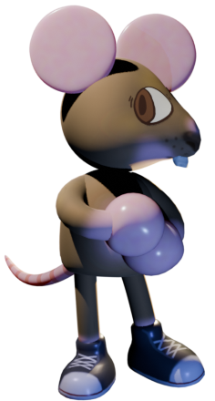
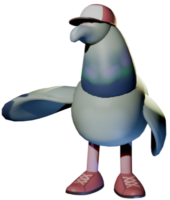
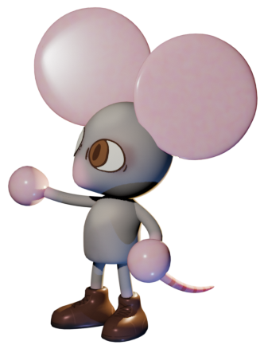
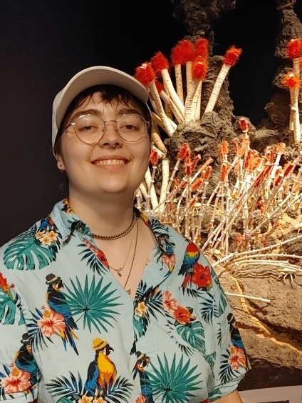

Bella George

Bella George is a new media artist with an interest in programming, game development and animation. Her work dives into the complexities of identity and alienation, all while keeping a playful, slightly eccentric tone. She uses humour to soften the barriers surrounding these subjects and to invite viewers to reflect upon themselves in a comfortable environment.




My work seeks to broaden the imaginative and emotional possibilities of video games, using technology to foster empathy, connection, and a more nuanced understanding of identity. I am particularly interested in deconstructing themes such as: gender performativity, alienation, and heteronormativity. These concerns are explored through video games—spaces that allow players to inhabit realities beyond the physical, without fully severing their ties to it. Within these spaces, I invite the viewer to explore how identity is formed and expressed both as a result of the technical systems in my games, and the interactions they have with others in universe. In addition, I ask them to examine their own impact on this system, and how they navigate it.
For example, in my work Cocktails and Cat Tails 2025 the story unfolds through a series of interactive conversations where the player's decisions directly impact the outcome. Set beneath a large and dangerous human city, a series of animal characters—pigeons, rats, and other so-called "vermin"— grapple with feelings of alienation and bigotry. It subtly parallels the experience of the queer community through references to LGBT history and culture. The player is implored to consider the ramifications of assimilating into a society that is hostile to their identity and wellbeing. The realm of the game thus acts as a tool to explore different social possibilities, and it does so in a safe environment away from the direct pressure of the real world. In a similar vein, my piece Look Yourself In The Eyes 2026 traps the player as a character reflecting on their experiences as a queer person. In it, they are asked to navigate arguments about queer utopianism, safety and the significance of representation. The imposition of a perspective, and the function of addressing it is a way of establishing empathy and awareness of the complex interiority of the characters within my games.
My practice is situated within the larger field of Art/Serious Games, which look at how games can be used as more than a means for ludic interaction—instead prompting the user to reflect on aspects of the real world. It also considers the writing of Judith Butler, especially their theory of performativity, building on their work to explore how digital identities and performances can affect one’s physical identity. My practice leverages interactive media to expand the emotional and imaginative landscape of digital experience, crafting environments where players interrogate the construction of identity, navigate relational dynamics, and reflect on their influence within these immersive systems. In building these spaces, I hope to break down these complicated social structures in an accessible and fun manner. I would like the player to leave my games thinking about their lives in relation to the spaces they’ve explored, and consider how they might be upholding/wielding hierarchical language and values.